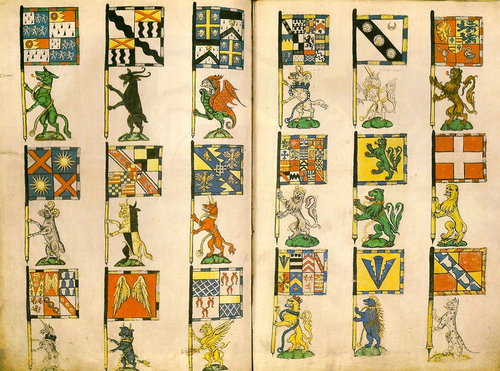
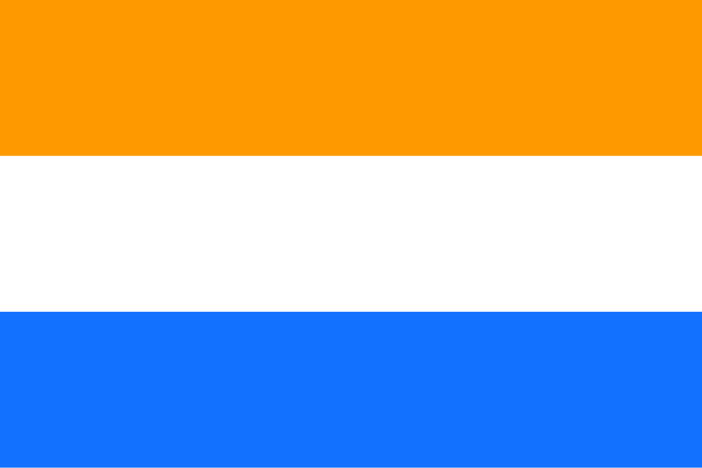
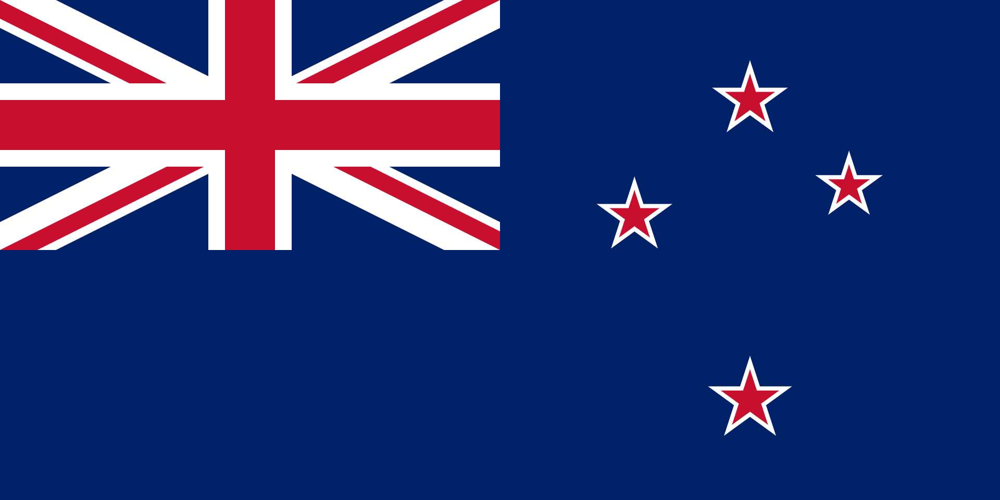

Proto-flags

Although flags have a long history, their use as national symbols is recent. In fact, many anachronisms occur when discussing older flags, such as when mentioning ancient empires like Mongolia or Rome. Even some of the most recent empires lacked a flag to speak of, like Austria-Hungary, which did not have a national flag, but rather a civil ensign that was flown on merchant ships.
The concept of a "national" flag is about as recent as the idea of national identity. Ancient states like Rome and China didn't use flags, but they did use banners and emblems that symbolized their leadership, armies or entire empires.
Pictured in this section are the banners of arms belonging to the mid-sixteenth-century Knights of the Order of the Garter, which is only one of many orders that used banners to represent their allegiance. Another common use for pre-flag banners and symbols was for representing royal families, reflecting that, before national identity took roots in Europe, it was royal and religious allegiance that bonded a country.
With the innovation of silk in China and subsequent propagation along the Silk Road, flags as we know them today began to develop. Flags that comprise cloth attached to an upright pole at one side seem to have first been regularly used by the Saracens who introduced it to the Western world, although they would not gain popularity in the latter until the 9th century. Flags are often mentioned in the early history of Islam: tradition holds that a black flag was flown by Muhammad during the Conquest of Mecca, in the 7th century, and that his followers flew green flags.
National flags

Originally, flags representing a country would generally be the personal flag of its rulers; however, over time, the practice of using personal banners as flags of places was abandoned in favour of flags that had some significance to the nation, often its patron saint. Early examples of these were the maritime republics such as Genoa that could be said to have a national flag as early as the 12th century. However, these were still mostly used in the context of marine identification.
An early example, that prefigured to developments to come, was the Prince's Flag (pictured in this section) which emerged as a flag of resistance and as a symbol of liberty in the Netherlands during the 80 years war. It is notable for being one of the first European flags that broke with the tradition set down in the medieval context of cross flags representing realms.
Although some flags date back earlier, widespread use of flags outside of military or naval context begins only with the rise of idea of the nation state at the end of the 18th century and particularly are a product of the Age of Revolution. Revolutions such as those in France and America called for people to begin think of themselves as citizens as opposed to subjects under a king, and thus necessitated flags that represented the collective citizenry.
Flag of the UK

One of the most iconic flags in the world, the flag of the United Kingdom is a beautiful graphical representation of the nations that make up the country.
The flag is composed from the flags of England, Scotland and Saint Patrick's cross, which represents Northern Ireland.
Its design summarizes centuries of political and cultural changes that shaped the United Kingdom. Adopted in its current form in 1801, the flag embodies the merging of diverse identities into a single, cohesive nation, while still honoring their distinct traditions.
Being introduced after Ireland's union with Great Britain, the flag reflects the political and cultural ties between the constituent parts of the UK. Notably, Wales is not represented in the Union Jack, as it was already united with England when the original Union flag was created in 1606. Though some MP's have raised this as an issue, it is generally not considered to be a problem, and Welsh people usually identify with both the UK flag and the Flag of Wales.

Beyond its official use, the Union Jack has taken on cultural significance around the world. It features prominently in the flags of many former and current British territories, such as Australia, New Zealand (which tried and failed to change their flag through referendum), and British Overseas Territories, symbolizing historical ties to the UK. Its bold and striking design has also inspired art, fashion, and pop culture, making it a timeless icon with both historical and modern relevance.
As of 2013, numerous proposals were made about how the Union Flag might be altered to create a flag for the union of England, Wales and Northern Ireland after possible Scottish independence. The College of Arms stated that there would be no need to change the flag in those circumstances, and the existing flag could continue to be used if desired. Regarding the removal of Scottish heraldic features from the Union Flag, the Court of the Lord Lyon stated in 2012 that "[that] would be speculation at this stage, and we could only cross that bridge if we came to it."
To explore other mesmerizing flag designs, check out the Design section of this site!